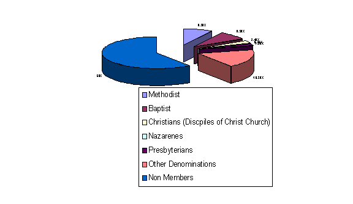

Article # 87
What is Religion across Arkansas?


B2: Cultural Attributes: Religion
"Religion across Arkansas"
By Patricia Porter, J. Blake Frazier, Justin Gifford, Jimmy Welch, Shlynda Nolen, April Cruce
Principles of Geography: Geog 1305, Section 2721
Prepared: April 11, 2001
What is Religion across Arkansas?
Arkansas is located in a region known as the “Bible Belt”. Like anywhere else in the United States there are many religions located here in Arkansas. How did these religions get here and what religions did they displace? Religion is a very important thing in Arkansas and throughout the South as it is in other countries.
Over the years there has been many debates over what defines a religion and what should be accepted as a religion. With the understanding that the United States was founded on Christian doctrine, one would assume that Christianity would be the most favored religion, but that is changing. In the United States “it is becoming more difficult to acknowledge that our culture was shaped by Christianity” (Whitman). The United States is a “melting pot” and invited into this “blending mixture” is every kindred and tribe that wishes to escape religious persecution and/or claim a better life for themselves. Although the United States is considered to be such, it has a region that spans from coast to coast known as the “Bible Belt”.
The religious movement was a time when people were becoming fed up with the old “Church of England”. The influence of the Church of England (Anglican Church) was diminishing mainly because the church was no longer in tune with the people’s needs. The common people saw the Anglican Church associated with “ dry-as-dust sermons, lackadaisical piety, and the fopperies of the tidewater society”, which were quickly becoming something of the past (Boles 1).
New denominations such as the Baptist, and Methodist were rapidly gaining momentum as well as local popularity and support. The major belief of these three were that Jesus was the son of God, that all “Christians” should try to help each other, and that it was their duty to spread the Gospel, the teachings of Christ (Boles 1). The Baptist Church believed that the believer should be immerged in water, or baptized, after receiving Jesus (Lehigh). Methodist churches denounced five of the sacraments of the Catholic church and believed that the only two that were necessary were baptism and partaking in “the Lord’s Supper,” or communion (UMC).
The Baptist, and Methodist were founded in the United States sometime in the early 1700’s. Most of the time these three denominations were started on the East coast mainly due to the fact that people were immigrating from Europe to the United States. Being on the coast it was just more convenient to settle in the East. The decades following the American Revolution kind of changed everything. With war behind them, settlers began to search for God once again. This was the beginning of the “Great Revival”.
The Great Revival swept through the South during the early portion of the 19th century converting every neighborhood in the South. The revival is believed to have begun in the Cumberland region of Kentucky. From there, trained evangelists from the East worked their way throughout much of South converting people to Christianity.
Frontier life was harsh, and people were starved for something, anything that would free them from their primitive and boring life. Historians believe that this time period was perfect for a religious movement to sweep through the nation. There was a decline in Indian attacks, the loneliness of thinly settled pioneer families, and the constant nearness of death helped to push this religious revolution through the South.
Through the past 100 years of Arkansas history, religion has been affected by many factors but immigration had the most to do with its change. When immigrants entered into the U.S. they either accepted the beliefs of most Americans or they were against their beliefs because they already had their own religion. The immigrants were mainly scared to change the way that they ran their normal life. The majority of them accepted the American religions. A survey was run around the Conway, Arkansas district in the 1925 to find out how religion and country life was (Appendix 1). The majority of the people, which were in some religion, were Methodist. What the survey didn’t show was the amount of influences that immigrants had on the state. Today, ten percent of all Americans—27 million—were born in a foreign nation (Whitman). Through out the next several decades’ different cultures moved into Arkansas and other religions changed. The Methodist Episcopal Church in southern Arkansas fought against all sort of immigration in Arkansas in the 1920’s because they were afraid that immigrants would change the way people think. The church was more afraid of the different beliefs that immigrants would bring to Arkansas. During this time, Arkansas was split in two. The North Arkansas Conference controlled all of the rich farms and the northeastern mountains. The South Arkansas Conference controlled the rest of the state’s land. The Methodist Episcopal Church was right in the center of this and they took their religious arguments to the courts. The majority of these arguments were to restrict immigrants form getting into Arkansas.
Religions formed mostly by starting in one place and moving into another. This is called spatial diffusion, when one idea originates in a place and then spread out to other places. Various religions move all around the world by different forms of communication and movement. Nearly all religions came into Arkansas by the people who originally settled here. This is also referred to as migration. The people migrated from other countries, bringing their own religions, and converting other settlers. Religions then formed as a result of people adopting beliefs and ideas. Today only 12 percent of Americans claim to be any other religion besides Christianity. Arkansas has a very large number of Baptists and Methodists. These religions formed under Christianity.
Religion is spread by two type of spatial diffusion. Relocation and contiguous. Contiguous diffusion is when something occurs from one place directly to a neighboring place. The denominations of Baptist, and Methodist were spread all the way from Virginia, Pennsylvania, and Maine to southern regions like Georgia, Kentucky, and of course Arkansas by contiguous diffusion. Because technology was rather primitive during the late 1700’s the only way news could travel was person to person and neighbor to neighbor. The lack of technology during this time caused a large measurment of friction of distance for religion, which limited long distance interactions.
Christianity emerged from Judaism. Judaism was developed in Israel. The beliefs and practices were changed and turned into Christianity in Egypt. From there it diffused to Ethiopia, and was established in India by the second century. It then spread northeast to Armenia, which became the first Christian nation by the early fourth century. By the end of the fourth century, Christianity became the Roman Empire’s official religion. Chrisitainity became the official religion after the emperor was converted to Christianity and enforced it onto the people. Christianity then spread all over Europe and left with migrants to North America. Christianity diffused rapidly and now covers nearly all the Western Hemisphere. Christianity became so prominent along the Southeastern part of the United States that it is referred to as the “Bible Belt”. Arkansas is part of this belt and predominantly Christian.
Judaism is also a religion found in Arkansas. It’s bases is on a covenant established between God, Abraham, and Abraham’s descendants. It developed in Israel of the Middle East and through relocation diffusion, or diffusion that occurs through migration, it came to be in the United States. Judaism is not spread but instead you are born Jewish. Although the majority of Jewish people live in New York and California, there are Jewish people living in Arkansas. Judaism was mainly brought to Arkansas by migration from other states in the United States.
Religions derived from Christianity are the different sects or denominations, such as Methodist, Baptist, and Catholics. Many non-denominational churches are founded with beliefs similar to other religions. These churches are formed because they share some of the religions’ beliefs and ideas, but disagree with many important ones. For example, Southern Pentecostal churches are derived from the original Pentecostal religion. They have almost the same beliefs, but Southern Pentecostals don’t agree with the strict rules of Pentecostals. Southern Baptists are also like Baptists, but they are more charismatic. Many religions are derived from other religions because of slight belief differences. Television and the internet also introduce religions to society by reducing the friction of distance, or cost of getting information from one place to another, between them. Many new age religions, such as Wiccan and Paganism, are found on the internet. Television helps to spread some religious beliefs, especially Christianity because T.V. stations broadcast Christian church services. People can learn about different religions by using these forms of technology, but the main way religion is spread is by migration and people introducing new beliefs and churches.
One’s religion is determined by their engagement in what they believe to be a spiritual reality. In Arkansas the predominate belief system is Christianity, but it is not the only religious practice that takes place. The capital of Arkansas has been described as the “meditation and practice center” for up to five Buddhist traditions (Pruitt).
Religion has always had the ability to shape the structure of society. In some cases, it causes people to be loving and accepting of weaker citizens, while in other cases religion can cause an up-rising of genocide or “ethnic cleansing”. It can cause some people to show forward generous love while causing others to demonstrate a brutal hatred. In Arkansas religion played a part in the abolishment of slavery and in the women's rights campaign (Robinson).
Although Christianity is a dominant religion, can Arkansas be looked at as mono-religious? There are many ways that you can look at or ask if Arkansas is mono-religious. When one first thinks about it, one would say of course not because there is more than one religion in Arkansas. But with a second thought, one relizes that Arkansas could be mono-religious. A New Yorker, which has grown up to see there are many different lifestyles and religions, may see Arkansas as a “Lord Jesus” state being in the middle of the “Bible Belt”. If you are not in any form of Christianity in Arkansas then you are looked at differently by about 70-80% of the state’s population. While it doesn’t really matter if you are Baptist, Methodist, Catholic or Jewish, if it does not involve Jesus in Arkansas then it is looked down upon.
The dominant religions in Arkansas all have the same major ideas. Jesus Christ died for the sins of mankind, or the ticket to heaven is accepting Jesus as your personal savior. Some put money into missions while others use it to expand their ministry. Although they have the same basic beliefs about Jesus, they may believe that you can or can not lose your salvation. It is the same religion with just a different style.
Appendix I

Works Sited
Boles, John B. The Great Revival (Beginnings of the Bible Belt).
Bergman, Edward F. Introduction to Geography: People, Places, and Environment. Prentice Hall, Inc. Upper Saddle River, New Jersey: 1999
Lehigh Valley Baptist Church. “Information Center.” Online. 20, April 2001. <http://www.lvbaptist.org/church/index.htm>
Pruitt, Phil. “ The Ecumenical Buddhist Society of Little Rock.” 11 April 2001. Online. 12 April 2001. <http://www.ebslr.org>
Robinson, B. A. “Ontario Consults on Religious Tolerance.” 6 March 2001. Online. 12 April 2001. <http://www.religioustolerance.org/1st_visi.htm>
United Methodist Church. “About The UMC-Our Beliefs-Official Website of The United Methodist Church.” Online. 20, April 2001. <http://www.furman.edu/~benson/docs/rcd-fmn1.htm>
Whitman, Larry. “Immigration Changes Face of U. S. Religion.” The Washington Times. 2000. 23 April 2001. <http://www.valpo.edu/geomet/geo/courses/geo200/bib8.html>